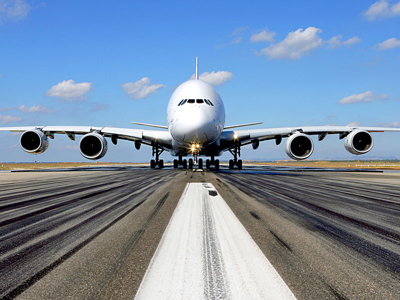

I have always been interested by airplaines, and I started gliders when I was 14, then at 15 I did my first flight solo, at 16, I received my gliding licence. Therefore, I will present you my 3 favorite plane in the 3 cathegories: Commercial, Private and ultra light.
|  | CommercialThe Airbus A380 is my favorite comercial airplane, as the concord is now out of the game! The 380 is spacious and really silencious. It also bring inboard a bunch of new technology such as virtual reality, making the cockpit a really interesting place to visit. However, it has been creticise by the crew, as theire space have been reduced... |
|---|---|
PrivateThe Cirrus SR22 is a single-engine four- or five-seat composite aircraft built from 2001 by Cirrus Aircraft of Duluth, Minnesota. It is a development of the Cirrus SR20, with a larger wing, higher fuel capacity, and a more powerful, 310-horsepower (231 kW) engine. The SR22 has been the world's best-selling single-engine, four-seat aircraft every year since 2004. It is equipped with a whole-plane emergency recovery parachute system, the Cirrus Airframe Parachute System (CAPS). This has contributed to its market success and has given it the name "the plane with the parachute". |
|
Ultra LightThe A5 is a high-wing flying boat-type amphibious monoplane with a carbon fiber airframe and retractable undercarriage. It seats two people in an enclosed 46-inch-wide (116.8 cm) cockpit. The wings can be folded aft for ground transport and storage. Equipment includes an angle of attack indicator, an unusual feature in general aviation aircraft. A whole-airframe Ballistic Recovery Systems parachute is optional, except for in U.S.-registered A5s where it is mandatory, due to ICON's exemption to the U.S. LSA weight limit. The A5 uses many different design elements to provide a manageable stall recovery |
I do not only like to fly! I also like to sail